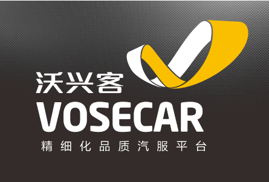

品牌介绍
国内汽车后市场精细化顶端技术服务的领袖型品牌
沃兴客是基于汽车后市场中汽车电子类服务分工的散乱现状、凭借自身具备的多年汽修技术、汽车电子技术（如汽车电脑解码、锁匠技术等）的优势，对各服务模块进行专业化整合，从而形成品牌的核心竞争力，同时融合了汽车的周边服务，包括汽车保险、电脑解码、防盗编程、车辆信息管理、汽车技术培训、个性化定制服务而形成的汽车后市场新时代独特的连锁品牌。
沃兴客以高端汽车技术为先导，致力于为汽车后市场提供精准化、智能化、数据化、个性化等的解决方案，从技术和服务的层面满足市场的深层次汽车服务需求，树立国内汽车后市场精细化顶端技术服务的领袖型品牌。
沃兴客是基于汽车后市场中汽车电子类服务分工的散乱现状、凭借自身具备的多年汽修技术、汽车电子技术（如汽车电脑解码、锁匠技术等）的优势，对各服务模块进行专业化整合，从而形成品牌的核心竞争力，同时融合了汽车的周边服务，包括汽车保险、电脑解码、防盗编程、车辆信息管理、汽车技术培训、个性化定制服务而形成的汽车后市场新时代独特的连锁品牌。
沃兴客以高端汽车技术为先导，致力于为汽车后市场提供精准化、智能化、数据化、个性化等的解决方案，从技术和服务的层面满足市场的深层次汽车服务需求，树立国内汽车后市场精细化顶端技术服务的领袖型品牌。
